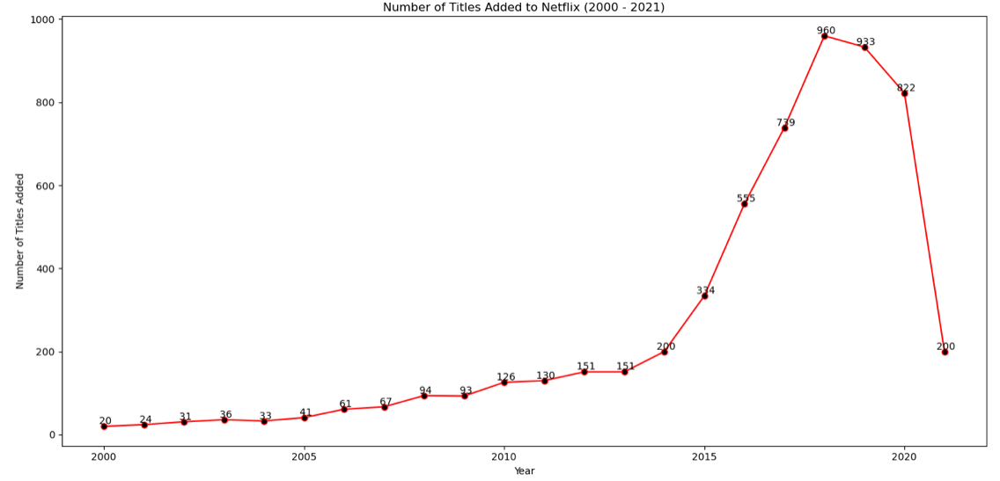
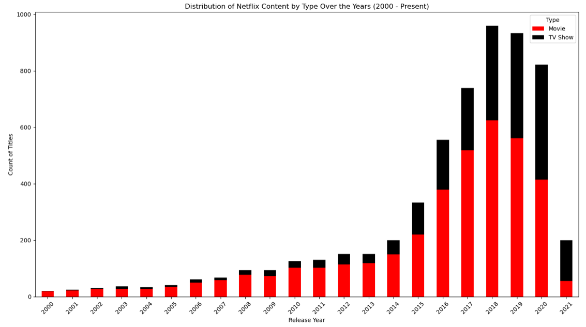
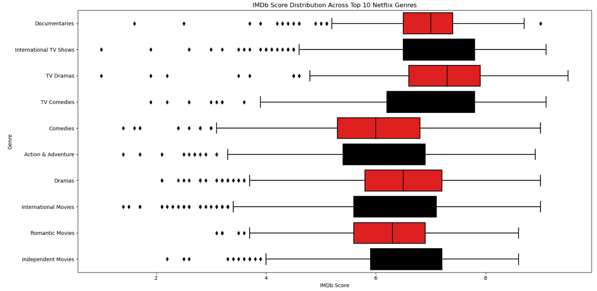
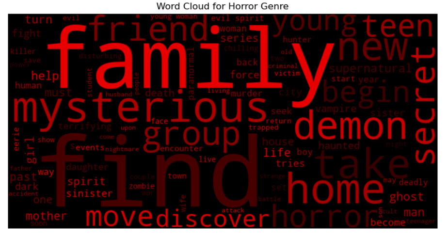
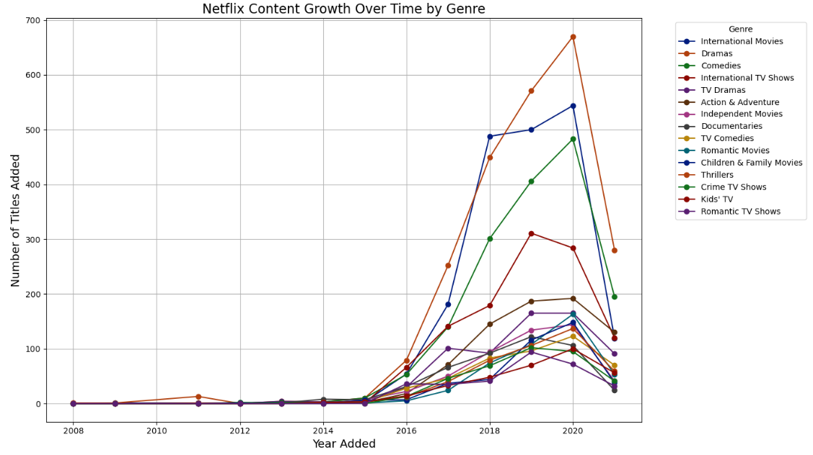
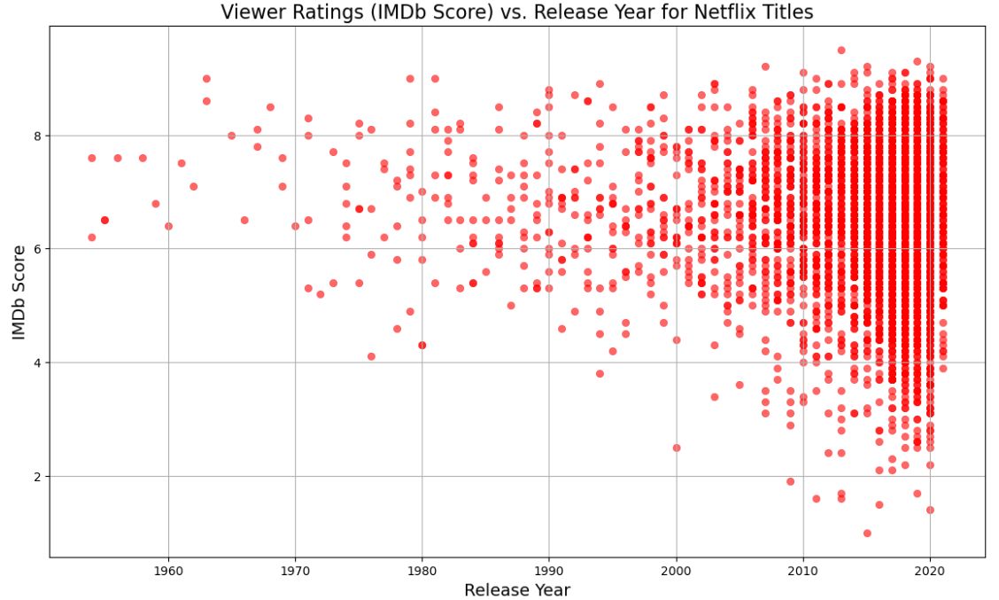

Data Insights
Interactive Dashboard
This project aims to uncover patterns in Netflix's vast library of films and TV shows, exploring how content types have evolved over time and identifying popular genres across different regions.
Embark on a data-driven journey as we explore patterns in Netflix's vast catalog, decipher the evolution of content types, and shed light on popular genres from various corners of the globe. Our team, the Black Hawks, employs a fusion of Netflix's metadata, IMDB ratings, and Rotten Tomatoes scores to provide a multifaceted perspective. Below are the visualizations that showcase our findings and illustrate the narratives hidden within the data.
The line graph depicting the cumulative number of titles added each year illustrated a rapid increase in content addition, especially in recent years. This growth trend supports the hypothesis that Netflix has been aggressively expanding its content library to cater to a wider audience and to keep up with the competition.
This visualization highlighted the growth in the number of Movies and TV Shows on Netflix over time. The increasing trend in both categories, especially the notable surge in movies around the 2010s, suggests Netflix's expanding library and possibly a strategic shift towards offering a more diverse set of content. This shift might be in response to evolving viewer preferences and the competitive streaming landscape.
The box plot shows IMDb score distributions across various Netflix genres, the hypothesis could be exploring the quality of content as seen by viewers across different genres. The intent of this analysis is to identify which genres consistently deliver content that is highly rated, as well as to understand the range and distribution of viewer opinions within each genre. Such insights can be useful for Netflix's decisions regarding which genres to invest in and what type of content to prioritize in order to maintain high viewer satisfaction and engagement. The dots outside the boxes seen are the outliers. They represent IMDb scores that fall outside the typical range (IQR), either unusually high or low compared to the bulk of scores in that genre.
This is a word cloud for the horror genre, which is a visual representation of text data where the size of each word indicates its frequency or importance within a certain context—in this case, likely keywords associated with horror movies or TV shows on a platform such as Netflix. Prominent words like "horror," "mysterious," "supernatural," and "family," among others, suggest common themes and elements that audiences might expect from horror content. The hypothesis behind creating such a word cloud could be to visually analyze and present the most frequent elements or themes that define the horror genre on Netflix. This can help content creators and marketers to understand popular tropes within the genre and tailor their productions and promotions to match audience expectations and trends.
This visualization provides insights into how the variety and volume of content in different genres have evolved on Netflix over the years. By tracking the number of titles added each year across various genres, you can identify trends in content acquisition and production, such as the increasing popularity of certain genres over time. This can reflect changing viewer preferences and strategic decisions by Netflix to cater to these trends.
The scatter plot of viewer ratings (IMDb Score) against the release year for Netflix titles offers a way to assess the perceived quality of content over time. This visualization can uncover insights such as trends in content quality and viewer reception over the years, helping to identify which periods and types of content have been most successful or well-received.
